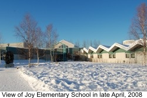

|
About The School
Louis F. Joy Elementary School located in Fairbanks (Interior Alaska), is a public school in the Fairbanks North Star Borough District (FNSB)
Within FNSB, Joy Elelmentary School is one of the two elementary schools that serves the largest number of native Alaskan students and shows a large ethnic diversity. Th school takes pride in the fact that it is the first school in the FNSB to earn the Green Star Award for the environmentally sound practices. Principal Dave Foshee and his entire staff are strong supporters of educating children in a culturally sensitive environment.  The contact details of the school are: Joy Elementary School 24 Margaret Street Fairbanks, AK 99701 Phone: (907) 456-5469 Fax: (907) 456-1477 |
| |
|